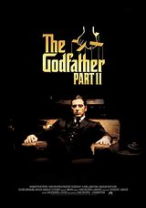
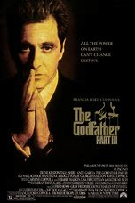

|
1.
The Godfather
(1972)
2hr 55min | Crime, Drama
 9.2/10
 100
Official Trailer
|
The Godfather "Don" Vito Corleone is the head of the Corleone mafia family in New York. He is at the event of his daughter's wedding. Michael, Vito's youngest son and a decorated WW II Marine is also present at the wedding. Michael seems to be uninterested in being a part of the family business. Vito is a powerful man, and is kind to all those who give him respect but is ruthless against those who do not. But when a powerful and treacherous rival wants to sell drugs and needs the Don's influence for the same, Vito refuses to do it. What follows is a clash between Vito's fading old values and the new ways which may cause Michael to do the thing he was most reluctant in doing and wage a mob war against all the other mafia families which could tear the Corleone family apart. |
Marlon Brando
James Caan
Al Pacino |
Francis Ford Coppola |
|  |
2.
The Godfather: Part II
(1974)
3hr 22min | Crime, Drama
9/10
90
Official Trailer
|
The continuing saga of the Corleone crime family tells the story of a young Vito Corleone growing up in Sicily and in 1910s New York and follows Michael Corleone in the 1950s as he attempts to expand the family business into Las Vegas, Hollywood and Cuba. |
Al Pacino
Robert De Niro
Robert Duvall |
Francis Ford Coppola |
|  |
3.
The Godfather: Part III
(1990)
2hr 42min | Crime, Drama
7.6/10
60
Official Trailer
|
In the final installment of the Godfather Trilogy, an aging Don Michael Corleone seeks to legitimize his crime family's interests and remove himself from the violent underworld but is kept back by the ambitions of the young. While he attempts to link the Corleone's finances with the Vatican, Michael must deal with the machinations of a hungrier gangster seeking to upset the existing Mafioso order and a young protege's love affair with his daughter. |
Al Pacino
Diane Keaton
Andy Garcia |
Francis Ford Coppola |